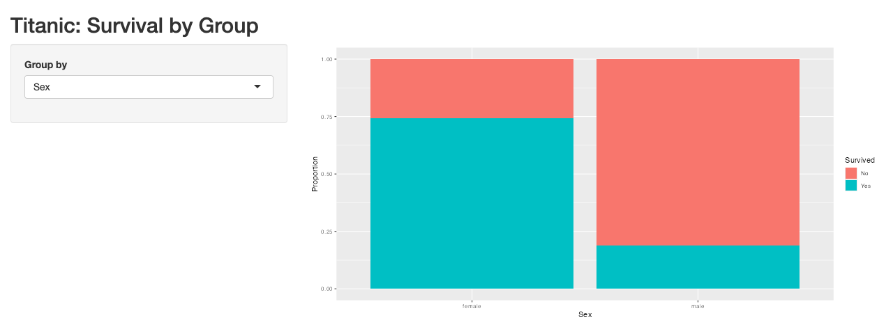
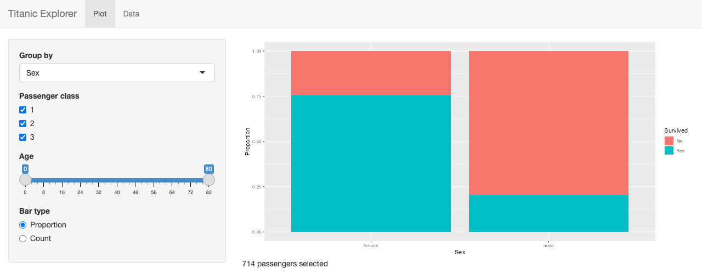
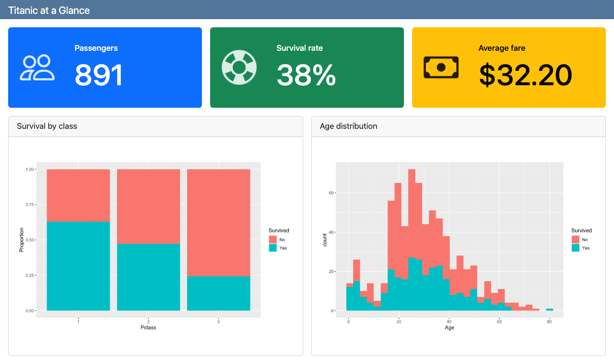
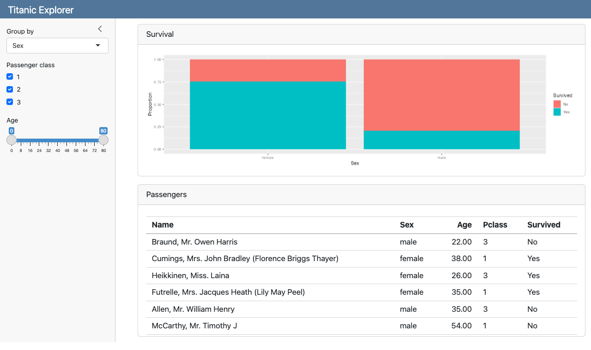

Shiny and Quarto Dashboards
Part 1: Shiny. Build a web app with nothing but R code.
Part 2: Quarto dashboards. Lay out plots and numbers as a dashboard, then make it interactive with Shiny.
Part 3: Publish and choose. Put your app on the Internet, and decide which tool fits a project.
Every example uses the Titanic data and runs on your computer. The code is in the shiny_dashboards folder next to these slides.
| Folder | What it is |
|---|---|
1_shiny_basic |
Smallest useful Shiny app |
2_shiny_explorer |
Several inputs, reactive(), navbarPage |
3_dashboard_static |
Quarto dashboard, no Shiny |
4_dashboard_shiny |
Quarto dashboard + Shiny |
| Shiny app | Quarto dashboard | |
|---|---|---|
| File | app.R |
dashboard.qmd |
| Layout | Written in R: fluidPage(), sidebarLayout() |
Written in Markdown: ## Row, ## Column |
| Interactive? | Always | Only with server: shiny |
| Best for | Apps: filters, uploads, many pages | Reports with plots, numbers, a few filters |
| Run it | Ctrl + Shift + Enter |
Render (static) or Run Document (Shiny) |
Tip
An interactive Quarto dashboard is Shiny underneath. Learn Shiny first and dashboards become easy.
app.R in its own folder, with the data file next to it.Ctrl + Shift + Enter (Mac: Cmd + Shift + Enter) to run it.read_csv("titanic.csv"), never a path like C://Users/....library(shiny)
library(tidyverse)
titanic <- read_csv("titanic.csv") |>
mutate(Survived = factor(Survived, labels = c("No", "Yes")),
Pclass = factor(Pclass))
ui <- fluidPage(
titlePanel("Titanic: Survival by Group"),
sidebarLayout(
sidebarPanel(
selectInput("var", "Group by", choices = c("Sex", "Pclass", "Embarked"))
),
mainPanel(plotOutput("bar"))
)
)
server <- function(input, output) {
output$bar <- renderPlot({
ggplot(titanic, aes(x = .data[[input$var]], fill = Survived)) +
geom_bar(position = "fill") +
labs(y = "Proportion")
})
}
shinyApp(ui, server)
selectInput("var", ...) creates a dropdown. Its value is input$var.plotOutput("bar") reserves a space named "bar".output$bar <- renderPlot({...}) fills that space.renderPlot automatically..data[[input$var]] turns the text "Sex" into the column Sex inside aes().
Inputs (in ui)
| Function | Gives input$id as |
|---|---|
selectInput() |
one value |
checkboxGroupInput() |
several values |
sliderInput() |
number or range |
radioButtons() |
one value |
dateRangeInput() |
two dates |
fileInput() |
an uploaded file |
Outputs: put the left one in ui and fill it with the right one in server
ui |
server |
|---|---|
plotOutput() |
renderPlot() |
tableOutput() |
renderTable() |
textOutput() |
renderText() |
uiOutput() |
renderUI() |
Warning
The id must match exactly: plotOutput("bar") ↔︎ output$bar. A typo gives a blank space, not an error.
ui <- navbarPage("Titanic Explorer",
tabPanel("Plot",
sidebarLayout(
sidebarPanel(
selectInput("var", "Group by", choices = c("Sex", "Pclass", "Embarked")),
checkboxGroupInput("class", "Passenger class",
choices = c("1", "2", "3"), selected = c("1", "2", "3")),
sliderInput("age", "Age", min = 0, max = 80, value = c(0, 80)),
radioButtons("pos", "Bar type",
choices = c("Proportion" = "fill", "Count" = "stack"))
),
mainPanel(plotOutput("bar"), textOutput("n"))
)
),
tabPanel("Data", tableOutput("tbl"))
)navbarPage() + tabPanel() give the app tabs across the top.input$age[1] and input$age[2].radioButtons() can show one label ("Count") but send another value ("stack").reactive() (server)server <- function(input, output) {
# Filter once, reuse in every output
filtered <- reactive({
titanic |>
filter(Pclass %in% input$class,
Age >= input$age[1], Age <= input$age[2])
})
output$bar <- renderPlot({
ggplot(filtered(), aes(x = .data[[input$var]], fill = Survived)) +
geom_bar(position = input$pos) +
labs(y = if (input$pos == "fill") "Proportion" else "Count")
})
output$n <- renderText(paste(nrow(filtered()), "passengers selected"))
output$tbl <- renderTable({
filtered() |> select(Name, Sex, Age, Pclass, Survived) |> head(20)
})
}reactive() is a reusable result that updates when its inputs change.filtered(), not filtered.filter() into all three outputs.
Untick class 3 or move the slider: the plot, the count, and the Data tab all update together.
.qmd file#| title: ....## Row and ## Column arrange the cards. {height=...} and {width=...} size them.# Page name (one #) makes separate pages; ## Row {.tabset} makes tabs.#| content: valuebox turns a chunk into a big-number box.list() with value, an icon, and a color."people", "cash"."primary", "success", "warning", "danger", "info", or a hex code.Any R output works as a card: ggplot, plotly, a knitr::kable() table, a leaflet map.

This dashboard is static: it looks the same for every visitor. To let them filter, add Shiny.
Three changes turn a static dashboard into an interactive one:
server: shiny runs the dashboard with a Shiny server.#| context: setup chunk loads packages and data once.## {.sidebar} section.plotOutput(), tableOutput(), … exactly as in Shiny’s ui.#| context: server chunk is the body of Shiny’s server function.quarto serve dashboard.qmd.
Same inputs and server code as Example 2. Quarto supplies the layout, cards, and sidebar.
| Job | Shiny app.R |
Quarto dashboard |
|---|---|---|
| Load packages and data | top of app.R |
#| context: setup chunk |
| Inputs | sidebarPanel(...) |
## {.sidebar} + a chunk |
| Output spaces | mainPanel(plotOutput("bar")) |
a chunk with plotOutput("bar") |
| Server code | server <- function(input, output) {...} |
#| context: server chunk |
| Tabs / pages | navbarPage() + tabPanel() |
# Page or {.tabset} |
| Run | Ctrl + Shift + Enter |
Run Document / quarto serve |
input$..., output$..., render*(), and reactive() are identical in both.
Posit Connect Cloud (connect.posit.cloud) replaces shinyapps.io. It hosts Shiny apps and Quarto dashboards.
From RStudio (version 2026.04 or newer)
app.R or dashboard.qmd and click the blue Publish icon.From GitHub
rsconnect::writeManifest() and push manifest.json.Note
A static dashboard (Example 3) is just HTML, so it can also go on GitHub Pages like your other assignments.
Shiny app when you need
fileInput())Quarto dashboard when you want
Tip
Not sure? Start with a Shiny app.R. The same server code moves into a dashboard later almost unchanged.
| What you see | Usual cause |
|---|---|
| Blank space where a plot should be | Output id typo: plotOutput("bar") vs output$barr |
object 'filtered' not found or wrong result |
Called filtered without () |
Can't access reactive value 'var' outside of reactive consumer |
Used input$var outside a render*() or reactive() |
could not find function "selectInput" in a dashboard |
library(shiny) missing from the setup chunk |
| Works locally, fails after publishing | Local file path (C://...) or data file not in the app folder |
| Plot empty after unticking every box | Filter returns 0 rows; check with validate(need(...)) |
"Parch" to the choices.sliderInput() for Fare and use it in filtered().# Overview (value boxes) and # Plots (the two plots).textOutput() in a chunk, renderText() in the server chunk).